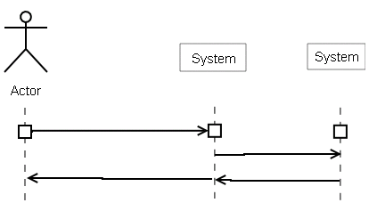

Questions about mainly about
Systems Sequence Diagrams
(SSDs).
Are SSDs used to prepare us for possible functions we might need if we are
developing and coding the software ourselves? What about large and
expansive projects? Do we need to go that deep/elaborate into it, or should
we be more general in how we approach it?
SSDs break down a use case into a series of function calls... in
preparation to placing them in objects that will be responsible
for handling them.
Tackle large/expansive projects in small bites: take a small but
important piece and analyse+design+code+test it. SSDs cannect
the analysis to the design. SSDs are a key technique for
requirements analysis.
Each time you add a feature (take another bite) you would be
wise to work out the details before you design a solution.
Note: some people go directly from use case to design. This
has the problem of documenting the initiating message into the system
from the user. SSDs do this and also make the next stage (OO design)
simpler. They use the "divide and conquer" strategy on the scenarios
in the use case.
"In theory, there is no difference between theory and practice. But, in practice, there is." This is the quotation from the beginning of chapter 10. Do you practice this theory?
In practice no. In theory yes..... Now I need to take my anti-recursion pills.
A series of operations -- function calls. Each is started by the prime
actor in a use case and carried out by the system. It shows the data sent
by the actor and the data returned by the system.
The system may also communicate (with
operations) with other actors.
It can also show repeating sequences and alternatives.
No. If there is one scenario with one step you might as well convert
that step into an event without any diagram.
Good question.
In theory you can do an SSD without a domain model and then
use the parameters in the SSD to kick start the model of the domain.
You can also do the domain without any SSDs.
I like to do domain modeling early....
There is a risk with having a domain model before the SSD: it can
seduce into designing the objects that implement the use case.
In the real world the team should choose (quickly) what they want or need
to do: and SSD first, the domain model first, or both in parallel.
One warning: don't try to all the SSDs at one time on a big project.
Work on iteration at a time.
Are SSDs the same thing as DFDs? How do they differ?
No. SSD != DFD.
A DFD shows a set of cooperating processes, stores, and external entities with
no implied sequence of events.
An SSD shows the sequence of events flowing into a single system
(process) mostly from a single external entity.
What is the difference between SSD and SRS in software development and which is more important?
An SSD might appear in a Software Requirements Specification -- (SRS)
but an SRS has lots more artifacts in it. Indeed few SRS's have an SSD.
SSD is a bridge between the requirements and the design in Larman's
(and my) approach to software development.
How does a System Sequence Diagram differ from a UML diagram?
An SSD is a special UML sequence diagram.
A sequence diagram is one of 14 UML diagrams.
[ What%20is%20the%20UML? in 20050502Outline ]
A system sequence diagram is a special kind of sequence diagram that
has the object [:System] in it. It also has actors. It defines
one scenario in enough detail so that we can start to design the internal structure of
the system.
How is SSDs used in use cases and will there be many SSDs for one use case or will there only be one SSD for one use case?
A use case has many scenarios. A scenario may (or may not) need an SSD.
Should we create SSD's for every scenario in every use case?
No. Just the interesting (odd, critical, valuable ) ones.
should we use a seperate SSD diagram for each system interaction or just the major ones?
ex:
user(actor) clicks new book listing -----> System
System generates listing page for user ------ >user(actor)
No more than one SSD per scenario. All the steps in one
scenario go into an SSD. And each action by the prime actor
turns into a message sent to the system...
The above pair of steps might be translated into a message+response like
this:
----requestNewListing()---->
<- - listing - - - - - - - -
or like this
----listing=requestNewListing()---->
in chapter 10 the relationship between SSDs and usecases it says system events for one scenario. Can you create an SSD with multiple scenarios of a use case?
In theory -- Yes. Indeed, many people do one per usecase -- and get very messed
up in the details. Much better to keep many diagrams simple than fight
with one complex diagram.
In a SSD if an actor invokes the system and this system has to query another system would you add another column for the second system? Something like this?

Good try ... close to perfect. The external systems are actually
Secondary Actors
and so should be shown with a <<actor>> stereotype and their real name. Like
the following
[ 08qaSSD.png ]
of a login process that uses a remote LDAP authentication service. This is also
shows that the LDAP is an "active" object --- runs continuously and responds
to asynchronous messages (shown with a "harpoon").
How do SSD complement domain models and use cases?
It actually connects them. The use case gives an informal description
of what happens but the SSD gives clear names to the actions that
change the "real" world as reflected in the domain model. This
is especially true when you have contracts for the operations in the
SSD.
SSD's show dynamics and domain models are static. Use Cases are
a more stakeholder friendly and less refined picture of the information
in the SSD.
Is domain modeling in general a concept that is widely used as I took many an Oracle SQL class and they used a similar technique to diagram their databases?
Domain modeling is very like the early conceptual models of databases.
The difference is that you can have an object in the domain (real world)
that is never going to be part of a data base. You are trying to capture
the logic of real world objects rather than how we encode the data
about he real objects.
What are some of the advantages of using system sequence diagram (SSD) compared to others?
An SSD breaks down a complex scenario into a set of simple to design events.
This is easier than trying to do a whole scenario in one go.
Do you always do the main success scenario for Use Case first in a System Sequence Diagram? Should you follow the "difficult" rule instead?
Certainly pick an interesting use case.... The reason for picking the main success
scenario first is that alternatives don't start until something goes wrong in the
main success story. So that has to be running before you have a place to "hang"
the alternatives.
In the SSD, can I have more than one primary actor? Except actor and system, waht kind of objects can I have. Can "System" be an conceptual class in domain model?
In an SSD put a single primary actor on the left... the actor that starts
the use case running. The System comes next. Put secondary actors
on the right.
The "System" is never a class in the domain model. First the system
does not exist yet, and second it is not external to the system
you are defining -- and domain objects should be outside the
System Under Design.
To have more than one primary actor you need to be doing more than one
use case. See below.
Can a SSD show multiple use case scenarios?
This not a wise idea. Use cases happen in parallel not in sequence.
The books states that, "An SSD shows system events for ONE scenario of a use case." Is it acceptable to write more than one SSD for one single use case?
Yes. If there are several complex scenarios you would end up with an SSD for each one.
If we have one SSD for each scenario of a use case, do we need to have an SSD for all use case scenario's?
No. Initially only one will be mapped to an SSD. Then we add
another, and so on. The trick is to pick the interesting scenarios first.
Interesting scenarios have value to the stakeholders,
tackle risks, and help you figure out the architecture.
two questions:
1) In the SSD, Do we write down all the events or interactions between a user and the system?
Yes -- the SSD names and sequences all the interactions in one scenario of
interest in one use case.
2) In diagram 10.3 it shows that the cashier actor makes the payment event into the system, but shouldn't that be for the customer actor? Did they make a mistake or I'm I confused?
This point-of-sale terminal is operated by a cashier and so they interact with the
system, on behalf of the customer. If it was a customer operated terminal then
you wold show the customer, and the interaction design would probably be
different.
Would an action like logging in be placed on an SSD that described editing
a database?
Answer: If the user does it -- yes. If the system does it to an external
actor
-- yes. If it is internal -- No.
On page 176 the it asks What events are coming in to our system? the mouse, keyboard, another system... I noticed that all of the SSDs in this chapter have and Actor interacting with a System. If you were dealing with another device say a Credit Card Reader would you replace System with Credit Card Reader or do you assume the Credit Card Reader is part of the system?
These are devices. For SSDs focus not on the physical device but on the
events coming from the device. It is wise to separate the programming of
the physical devices into a special collection of User Interface classes.
They need specialized work.
Should trivial responses be listed on SSDs? For instance: User initiates a makeNewSale event. Should a trivial response such as the system providing a method for the person to enter sales information be included as a response? Or should it just be taken for granted?
Don't show trivial responses. To be precise, show a response when it carries
interesting data. No point in taking time to document a simple "OK" message or
a prompt for the next event. I think these are best omitted to save time. I
don't think you risk much by doing so.
In regards to the SSD, is there a way to show an optional or an alternative on the diagram? Are all responses entered into the SSD? Optional vs necessary depiction?
Show all operations, even optional ones
-- it is more important to show all the operations than to be precise
about the logical structure.
There is a way to show selections, loops, options, etc etc in sequence
diagrams. Interaction frames. Basically put a box round the interactions and
label it with the logic.
In in the SSD in p. 175, there is mention of "interaction frames" that show loops in sequence diagrams. Are these the boxes with the folded over top right corners, or the box that says "loop" [more items] ?
YES! :-)
An Interaction Frame can express the standard "control" structures
including loops. More later. But they all have a folded over label.
The older tools can't do these:-( So I fake them with comment or generic
boxes.
SSDs have a loop diagram element. Do they have a decision diagram element or anything like that?
Yes -- label the Interaction frame with "alt" for alternatives" and separate them
the alternatives with a dashed horizontal line. Also, for optional
sequences: "opt".
Conditions should be put in square brackets like [this].
In each iteration, we select a use case or two for development, we extract
one single scenario
from those use cases and formalise it as a sequence of object oriented messages
sent to an object called [:System]. The system can send messages to secondary actors. The
system returns objects back to the primary actor, We then extract just one message
from the sequence and think about what it does to the system: what
objects change, what objects
do the work, .... Then on to the next message, and the next scenario,
until we have a design that we can test for a small but important part of
requirements. And so on.
Can you explain the major differences between Use Case diagrams, Domain Model diagrams, and System Sequence diagrams?
Table
| Feature | Use Case | Domain Model | SSD
|
|---|
| Appearance | Stick figures and bubbles | Box and links | Vertical and horizontal arrows
|
| Purpose | All the things the user can do | The user's world | Steps in a scenario
|
| ...
|
(Close Table)
What does Larman mean when he describes System Behavior as a "Black Box"?
He is using a term from early cybernetics in the 1940s and 50s. A black box is one
which you can not see inside it. It means we talk about what goes in and what comes
out, but we don't talk about what happens inside. Probably the earliest use of the idea
was Alan Turing's definition of the Turing test for Intelligence: if the device
is inside a box.... could you tell if there was a human in there?
Then programmers used the term for tests: black box tests are based on requirements and
white box (glass box) are based on the design.
Simple definition: you can't see what is inside a black box. Things happen.
There may be a complex mechanism. It may be a pigeon. But we can see that it
works.
As to the pigeon -- an experimental device for using sound to target enemy
aircraft worked well when tested. But when the army found out that it used
a trained pigeon they canceled the project.
Are we required to draw SSDs for all scenarios of every use case in a project?
In a real project I think you would end up having drawn, thrown away, and/or
erased,
SSDs of every scenario that has been coded.
But in your projects in this class will only finish two or three iteration
in the elaboration phase and so I expect you to do only the most critical SSDs.
And I don't want to grade every one you draw.... just enough to know you are doing
it right.
One step in a scenario is typically one message plus
an optional response.
The message is given a short name based on the description.
The data provided by the user is given a short name like a
programming language variable. Similarly for responses.
Don't work out how the system generates the response.
That is design. Do it later!
Example:
- user uses a password to login
login(pword)
(don't get bogged down in how the program decides that the login
is authenticated.)
A glossary should describe all the terms that have a project specific meaning.
It can help if there are pictures and diagrams!
In real projects it pays to define detailed record layouts, data formats, and syntax since these
determine a lot of the code. This is a data dictionary.
There are probably half-a-dozen tools for organizing and presenting glossaries,
and a dozen formats. In your projects I expect an alphabetized list of terms and
definition, perhaps with pictures/diagrams/mathematics/.... What ever it takes!
Ideally, in a real project, the terms should be hypertext anchors
<a name="Widget">Widget</A>: describe a widget,,,,
and when the terms are used they would be linked to the description.
<a href="./glossary.html#Widget">Widget</a>
for example.
Should their eventually be a SSD for each scenario in each use case or at a minimum at least one SSD for each use case main success scenario?
Probably, but not necessarily! Some use cases may be too
small to be worthwhile doing an SSD, I guess.
For each artifact ask: what is its value. An SSD generates names
for events and so connects requirements to designs. If you don't
need this because any fool can see what you've done.... why draw
the diagram?
The operation contract detail seems especially useful to our project, but
also seems like it's adds to the the use case what is mostly already
implied.
Do you recommend we include these?
Contracts can be limited to surprising/interesting requirements.
It helps with the design of classes of objects to create them, but again, I
can't think of a situation where this would not be implied already.
Something for a more complex project, maybe...?
If the contract for a step in a scenario is implicit -- no need to write it down.
If there are hidden complexities -- write the contract out.
My guess is that most projects get by without explicit contracts for steps... and
as a result discover they forgot to initialize some object or create a link
until they test the design out..... But we test early and we test often so
it is not too expensive.
I am confused to what is an operation contract. It sounds like a
detailed requirement of what the system needs to do which appears to
go against the iterative idea of development.
Iterative processes get a small part of the system working as quickly as possible without
sacrificing detail or quality. Testing corrects the initial ideas.... then we can add
another scenario to the design, and another one, and another.... so the system grows,
correcting misunderstanding as we go.
A contract is a necessary for a complex operation, inside a single scenario,
so that we can implement and test it.
If we worked out every contract, on every scenario, of every use case, and thought it
was perfect without testing it.... then we would have abandoned iteration and got into
BDUF
-- Big Design Up Front.
Iteration doesn't avoid detail.... it requires it. But works out... and codes...
one detail at a time.
Can you explain more about postcondition and what different between
precondition and postcondition?
Both are conditions -- they state properties that must be true.
The pre-condition describes the situation before something happens.
The post-condition describes the situation after that something happens.
Example: Event: get a puncture.
Before: Running on the road.
After: Got a flat tire.
The steps in the scenario reflect changes in the real world, that we we
will later implement by design and code. So contracts must be about real world objects.
And we find these described in the domain model.
Contracts need to be precise. But, if it would simple restate the name of the
message you don't need it.
Also -- you can write contracts for any function or operation in a
design or program -- these are not about the domain, but about the
state of objects inside the computer before and after the
event being described.
Postconditions are undesirable to be shown in use cases because they would
be too verbose?
I used to think so.... now I'm not so sure. Notice there are two
kinds of postconditions: those for the whole use case and those
for the steps in the scenarios in the use case. Putting *all* the
operation contracts in the use case document will clutter it up horribly.
And most of them will be obvious any way.
First pick a complex operation! Next get a copy of the blank form. Then fill it
in -- using your imagination and interviewing stakeholders. Review with colleagues
and stakeholders.
As far as I can see you should avoid anything that is imperative.
Avoid anything like a command. Use true/false statements:
Table
| OK | Bad
|
|---|
| X exists | Create an X
|
| Y doesn't exist | Delete a Y
|
| the a of X equals e | Change the a of X to e
|
| X is linked to Z | Link X to Z
|
(Close Table)
Notice I like to use a simple present tense ( x is y )
and Larman uses a passive past tense ( x was changed to y).
Take your pick (whatever your team likes most).
By the way... I've always used math as a shorthand so
it tends to be what I use for conditions: pre and post.
I feel as if there is a chapter missing. We jumped from SSD to operation contract. There is no clear explanation operation contract, Can you tell me, what, why and how. I see the samples, and the sections but I don't get it?
Its a gap in our degree that we don't teach you contracts as part
of developing functions in programs until the 400/500 level. Many
think they are too abstract to cover in CS201/CS202. I used them a lot in
the 1970s. Did a lot of research on them in the 1980s and 90s.
They are a way of capturing what happens, from the users point of view,
when the user does a single step in a scenario. Notice: from the users,
outside, view -- what happens in the domain when I do a particular step.
The idea is that an operation should be specified in terms of the conditions
before and after the operation. You will find it as a tool when writing
functions in programs as well.
Since the 1960s computer scientists have used contracts to bridge from the
header of a function to what it does. We nail down what it assumes
about the world when it starts, and then what it guarantees about the world when done.
We don't stress in beginning programming classes. I was surprised
that it was in this book. I like contracts.
But there was a time when I left out operation contracts as being too academic.
So a postcondition should be past tense since they are observations?
That is what Larman writes. I do not like it. I've always done mine
either in logic+math or in present tense.
Can you please elaborate on how the postconditions relate to the domain model.
They make statements about the the real world objects that exist as a result
of the operation, and how they are related, and what there properties are.
For example -- after logging in to myCoyote a user is authenticated, Some time
later they are not. This is experienced as by the user. We describe it as
a change of attribute (simple) or by the existence of an object symbolizing
the user's session: what the user wants to do.
Another example: after depositing money in an ATM the user
will believe that their account will have
more money in it. Later we will have to program the software to fulfill this
contract.
Is it just me or did they go all out on postconditions?
And the Analogy totally pulled it off, but isn't it just another condition?
I like the analogy as well. And yes -- post-conditions are just
conditions. Properties of the Domain Model that are true.
The idea of a post condition is to make sure you don't forget
an important requirement that must noted when one step in a
scenario has happened. To illustrate the style and the kinds of
conditions Larman does go all out.
By the way -- pre/post conditions can be used to specify any function
or procedure in a design -- in particular the methods in a class.
When new classes are discovered during the creation of a contract, should all of the previously written contracts be reviewed?
Good question. The classes should go into the domain model (the only
classes that an operations contract should mention) and I guess you may need
to take of the other contracts that refer to the effected classes.
However -- don't forget that most operations are obvious enough that
a contract is needed.
What examples could you give as to what would make someone utilize a contract?
It would have to be a complicated operation -- something that set values
to many variables, created many objects, and made links between objects.
Further it must not be obvious from the use case what happens.
Here is a sample of an operation that has a complex post condition:
I play a game called NetHack on my laptops. When I start the game
a number things happen. My character is created: dwarf, elf, human, ...
with a suitable specialism (tourist, warrior, thief,...)
and rank(novice), plus the kind of equipment that matches a
person of that species, type, and rank.
More, the map of the underground world that I will be exploring is created.
Complete with monsters...
And.... a pet dog or pony exists.
And... a view of the room where I have been placed is on the screen.
And there is a short message describing me and my mission.
are postconditions and contracts meant to make a more advanced and robust Domain Model?
No. They are a step towards defining objects and messages that will implement
the software. The domain model is a static picture, the contracts are
a snapshot of a dynamic step.
However, as a side-effect of writing one you can discover things about
the domain, and some of these might be recorded in a domain model.
How often is the Design by Contract approach used?
The full "Design by Contract" method of Bertrand Meyer (see my samples/methods.html page
if you are interested) is used.... by Bertrand Meyer and some others... But a
lot of people mentally think about contracts when coding... I often write them
next to function headers for example. They focus my brain on what is to be done.
Then later they let me use the functions without worrying about the detail. In fact
I have to go an add a couple of contracts to my next CS201/lab05....
Object Constraint Language
, in any of your projects?
I have studied it and done a few case studies with bits of the OCL.... even
put it into an article for publication. But I've not used it as
part of designing a software system ( I use my own notation for that).
Can you explain more about state pattern
The State Pattern is a way of designing objects so that they
appear to change classes when certain events occur. This is something
that we observe in the real world but is not easy to code in the most
popular languages. C++, Java, and so on allocate a class to an
object when it is constructed, and it can not change to another class.
And the class defines a fixed set of behaviors.
The "Gang of Four" found a way to get the desired effect and
called it the State Pattern. We will talk briefly about this and other
patterns later or you can look at
[ patterns.html#State ]
for links to detailed information.
I had a question about how important OCL in expressing UML constraints.
Because the book really doesn't go into it but when I Google it I got you
page that explain OCL in more
detail.
[ ocl.html ]
I think simple English and Mathematics is all you need for
nearly all contracts. We don't have time in this class to cover
the OCL and I'm not ready to teach it. However my page is a very
good resource -- along with the standard -- if you need to
figure out an OCL expression or write one.
This class goes into the different stages and iterations of the software
development life cycle, but in applying these concepts in other classes. I
find it almost impossible to follow the concepts due to a lack of time.
Does the real world leave adequate time and will I ever be able to apply
these concepts in a useful manner.
I hear, understand, and sympathize.
After the course is over:
Positive:
- + You will be able to use the techniques faster.
We walk before we run and crawl before we walk.
- + You will find it easy to omit techniques that don't help
a particular project.
- + You will tend to do it on small parts of the
problem: from analysis, to requirements, design, code, test, review.
- + You will have better tools. For example:
use a tablet PC with a projector and UML sketching tool
that captures the stuff directly into the project repository.
Negative:
- - Managers and teachers will still try to get you to do it cheaper and quicker.
- - Managers and teachers will ask you to do all the analysis/design/... first.
Interesting:
- ! You'll be a manager one day and give your people the time, tools, and power
to do it right.